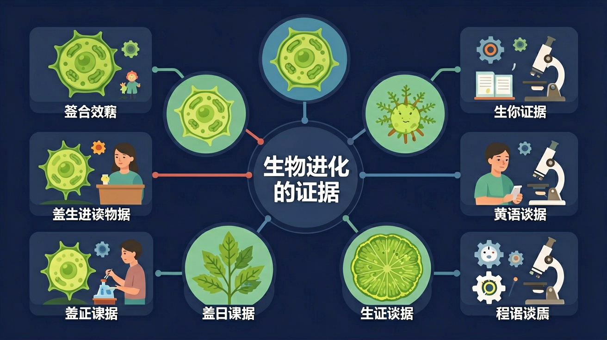

Gallery v1.0.0 · skill v7.14
个体差异怎样在环境选择下变成种群层面的改变？

已经知道：此前已学习达尔文自然选择学说（如长颈鹿进化案例）和遗传变异概念，了解生物性状可遗传且受环境影响
但问题是：学生常混淆同源器官（如鸟翼和鲸鳍）与同功器官（如鸟翼和昆虫翅）的进化意义，难以理解DNA序列差异如何量化亲缘关系
所以学：当古生物学家通过化石层位和DNA比对判断恐龙与鸟类亲缘关系时，需准确运用多源证据相互印证的方法还原进化历程
先选一个卡点。后面的例子、互动和 AI 学伴都会围绕它给你最小提示。
选择或输入后，本课会围绕你的问题展开。
判断生物亲缘关系时，以下哪项最可靠？
现象入口：化石、比较解剖、胚胎发育、分子序列都能从不同层面支持共同祖先和演化关系。
机制解释：进化证据不是单一材料，而是多源证据相互印证，形成对生物历史的解释。
证据抓手：证据来自化石年代、同源器官、DNA/蛋白质序列相似度和地理分布。
变量线索：亲缘距离、序列差异、化石层位和环境变化。做题时先找变量，再判断机制，最后写证据。
观察脊椎动物前肢骨骼排列模式，注意肱骨-桡骨-腕骨的相似结构
对比始祖鸟化石的羽毛结构与现代鸟类，分析过渡特征
人类胚胎早期出现鳃裂现象，反映脊椎动物共同祖先的水生起源
根据血红蛋白氨基酸序列差异，判断人与黑猩猩的亲缘关系远近
情境：鲸的前肢和人的上肢结构相似，提示同源而不是功能相同。
作答路径：观察到鲸前肢与人类上肢都有肱骨、尺骨等相同骨骼组成（现象），这些同源器官虽功能不同但结构同源（机制），证明哺乳动物存在共同祖先并发生适应性进化（证据）。
评分提醒：易混淆同源器官与同功器官，需强调结构起源而非功能；分子证据答题需具体到核酸/蛋白质序列而非笼统说DNA。
用 PhET 观察环境压力如何改变种群中不同表型个体的比例，再讨论它和 生物进化的证据 的关系。
💡 操作提示：改变环境、捕食者或突变条件，记录种群数量曲线，判断哪些变化是个体层面，哪些是种群层面。
真实数据：人与各物种细胞色素 c 的氨基酸差异数，随分歧时间变长而增多——分子水平为共同祖先提供了定量证据。
💡 探究任务：读出人与黑猩猩（差异≈0）、与马（≈12）、与酵母（≈45）的差异数，解释“序列差异越小亲缘越近”。
把“相似”都当成亲缘近，忽略同源和同功的区别。
只说“增加/减少”不够，要写清改变的是 亲缘距离、序列差异、化石层位和环境变化 中的哪一个。
没有实验现象、曲线趋势或结构证据，答案就像猜测。
以下哪组属于同源器官？
视频用语音和动态画面回顾本课主线：问题情境 → 机制模型 → 证据判断 → 迁移应用。

判断物种亲缘关系时，应优先综合分子证据和形态证据。
提交后会检查你的解释是否包含现象、机制和变量。
如果学生只说出概念名称，继续追问：题干里哪个证据最关键？这个证据对应分子、细胞、个体还是生态系统层级？如果改变 亲缘距离、序列差异、化石层位和环境变化 中的一个条件，结果会怎样？这三问能把答案从背诵推进到科学解释。
列举三种支持生物进化的证据类型
分析蝙蝠翅膀与鲸鳍的骨骼结构相似性说明什么进化证据
设计实验利用细胞色素C蛋白差异度推算两种哺乳动物的分化时间
若发现两种生物DNA序列相似度达90%，最能说明什么？
学习小结：化石揭示生物随时间演变，同源器官与分子证据共同证明现存生物起源于共同祖先，胚胎发育相似性反映进化上的亲缘关系。
先独立作答，再点选项查看对错与错因。
以下哪项最能直接证明生物的进化？
化石的形成需要哪些条件？
以下哪项是化石作为生物进化证据的局限性？
化石是古代生物的____或____。
答案：遗骸,痕迹
化石可以是古代生物的遗骸，如骨骼，也可以是痕迹，如脚印。
通过化石记录，科学家可以研究生物的____和____。
答案：形态变化,进化过程
化石记录展示了生物形态的逐渐变化，帮助科学家理解生物的进化过程。
通过观察不同地质年代的化石，分析化石如何支持生物进化理论。
❓ 为什么课本上说化石是进化的直接证据？
❓ 同源器官和痕迹器官怎么证明进化？
❓ DNA比对为啥能当进化证据？
学完这一课，这些问题你都能自信地回答。
✅ 现存物种与化石物种是旁系分支关系
💡 混淆直系祖先与近亲物种
✅ 同源器官需满足结构同源+发育同源
💡 忽视胚胎发育过程验证
口诀：化石结构DNA，三证定亲缘
类比：像拼图残片（化石）+家族相册（同源器官）+基因指纹（DNA）